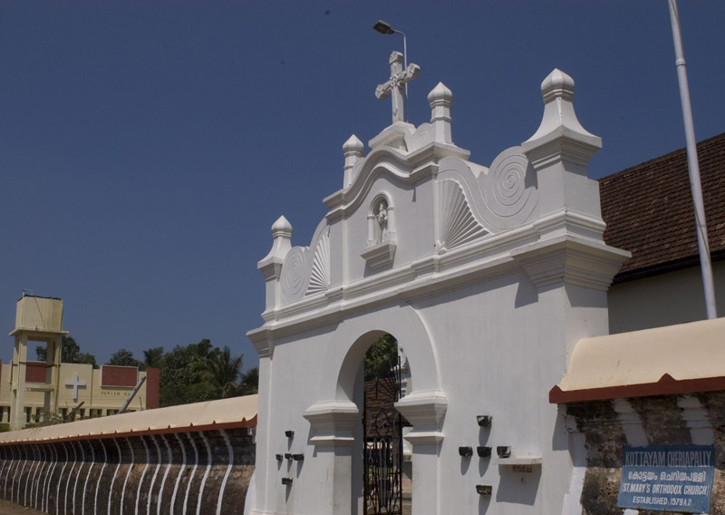
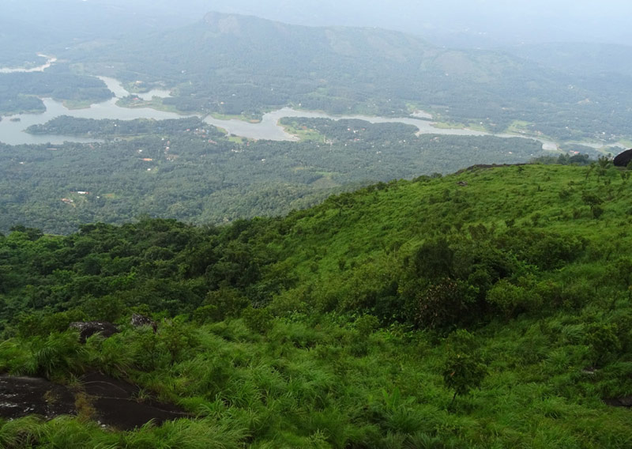
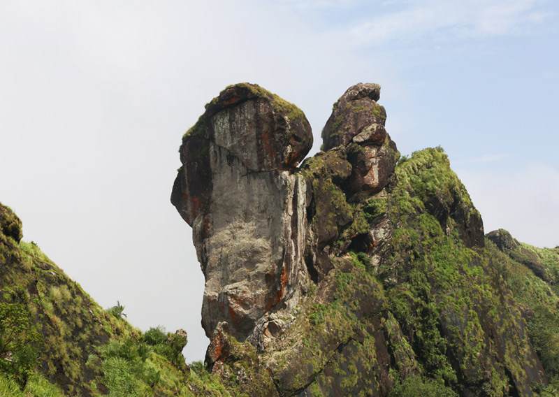
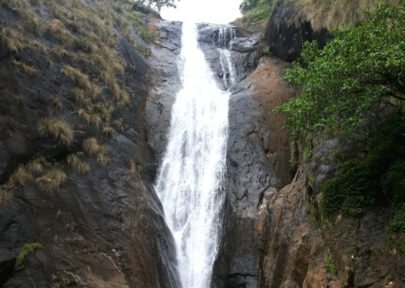
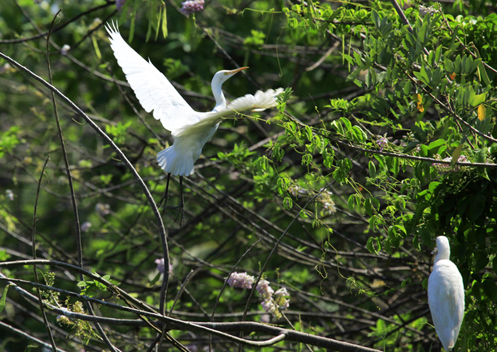
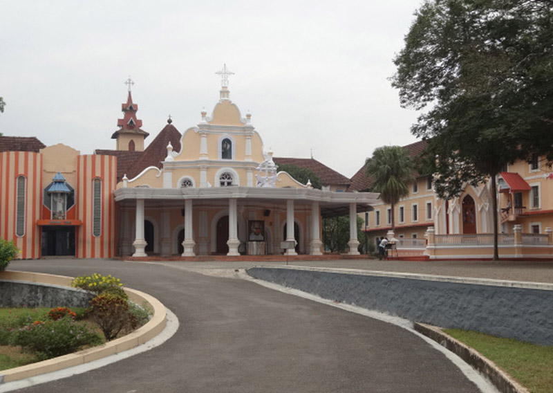
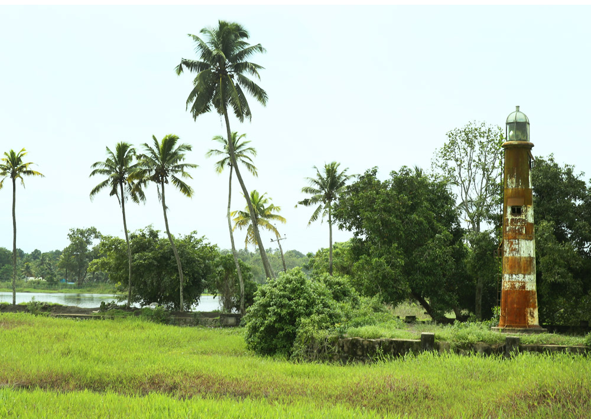
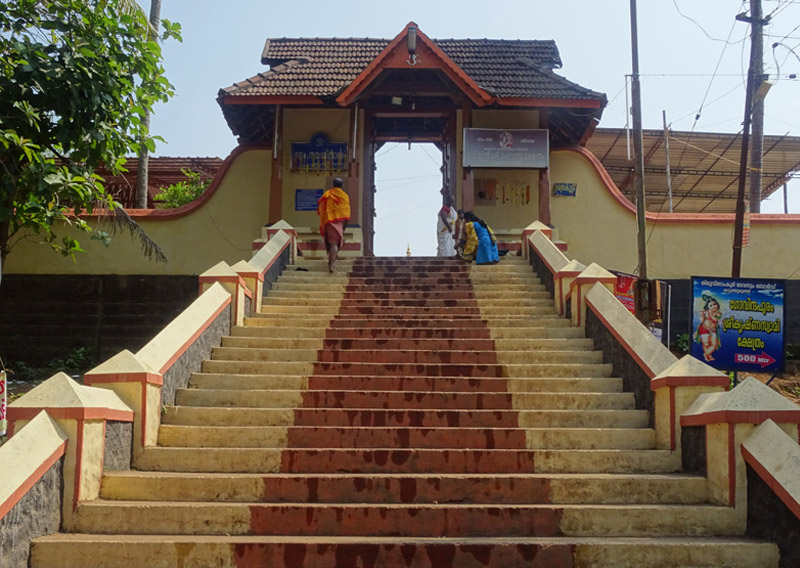
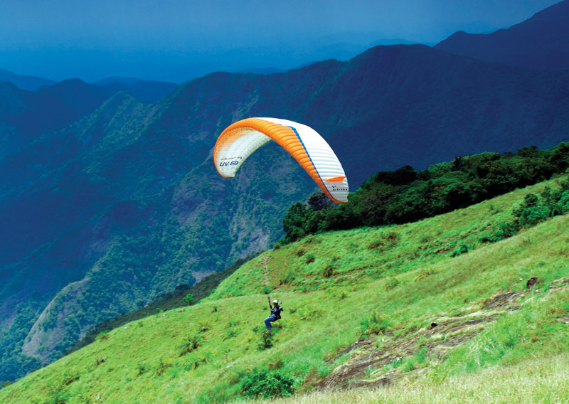

Home
(current)
Explore
Districts
Adventure
Holiday Packages
Cusines
Heritage
The Wild
Reviews
Destination
WaterFalls
Beaches
Museum
Contact Us
Sign In
Search
KOTTAYAM
An ancient town located on a hilltop bordered by the western ghats on the east and the thrilling Vembanad Lake on the west, Kottayam is a culturally rich and naturally enchanting destination. Apart from nature's bounty, the town has many laurels to its name. It is a proud town to achieve 100% literacy in India for the first time
How to Reach:
Bus
Kottayam is approachable via well-maintained roads to several major cities of Kerala as well as states. Regular bus services ply to and fro between Kottayam and towns like Kannur, Kochi, Kozhikode, Mangalore, Bangalore, Chennai, and Trivandrum.
Train
The town houses a station of its own which connects it to several major cities of the country. In fact, there are many long distance trains that stop at the town. One can avail taxi, bus or auto rickshaws from the station till the required destination.
Flight
Kochi International Airport serves as the nearest airbase to Kottayam District. It lies about at a distance of 93 km from the required destination.
Places to Visit
Kottathavalam:
A fascinating cave carved out of rock surface is Kottathavalam lying on the top of a Murugan Hills at Kurisumala. The cave is considered to be the resting place for Madura Royal family..
Kumarakom Bird Sanctuary:
A paradise for bird watchers, Kumarakom Bird Sanctuary or Vembanad Bird Sanctuary is situated on the banks of Lake Vembanad in kavanar River basin. The place is spread across a huge area of 14 acres providing a natural habitat to about 91 species of local birds and 50 species of migratory birds.
Thirunakkara Mahadev Temple:
A popular Hindu shrine and great epitome of Kerala style of architecture, Thirunakkara Mahadev Temple is dedicated to Lord Shiva. The temple was established in 16th century by the king of Thekkumkur.
Illikkal Kallu:
Located at a height of 6000 ft above the sea level in the Western Ghats of Kottayam, Kerala, Illikkal Kallu is a major tourist attraction and one of the most pristine spots in all of India. Situated in Moonnilavu Village, Meenachil taluk, the nearest city to the summit is Teekoy.
Things to do
Shopping:
Kottayam offers its visitors a splendid experience of shopping. The town is famous for its handmade products. The design and exquisite carvings are an example of great craftsmanship of the locals.
Trekking and Camping:
fair share of attractive beaches, forts, wildlife sanctuaries, trekking trails and other places of importance.
Boat ride:
Enjoy being toppled over with the sudden turn. Feel the joy of floating and head back refreshed.
Gallery








